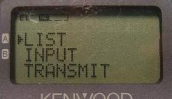
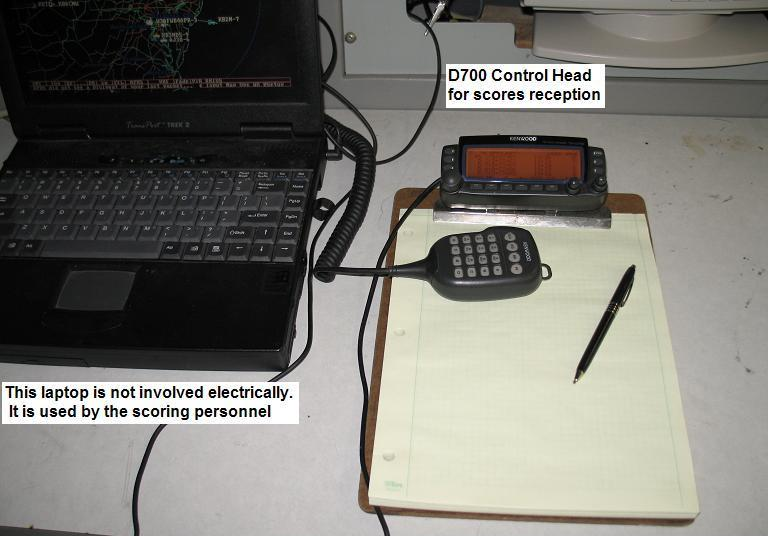
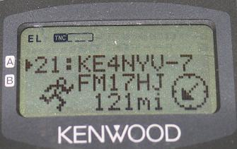
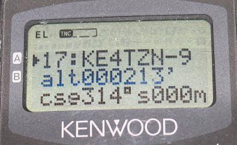

Such as JOTA, SCR, Skywarn, SATERN, AMSAT, or even FD!

Original CQ Server: CQSRVR
Announcement Server: ANSRVR
APRS has two global group messaging capabilties!
These let you GROUP message globally beyond the normal local APRS tactical area. Normally, local RF messages are injected into the global APRS Internet system (APRS-IS), but they never return to RF unless addressed to an individual callsign and that person is on the air. But now with the Pete's CQSRVR and Lynn's ANSRVR, we can form global message groups beyond VHF range for special events.
GLOBAL CQ's: . The first capability mostly for Field-Day is CQSRVR written by Pete, AE5PL, for calling CQ during special short term events such as Field Day! Just send an APRS message to CQSRVR with the first two words of the message being "CQ FD ... (your exchange)". Everyone else who has sent such a message will get a copy and when you see any similar CQ's you can make a contact by sending a direct message back to the sending callsign. When he also replies to your message, the QSO is complete. (though it won't count for FD points).
GLOBAL Group Messaging: Since CQSRVR does not allow tactical calls and only lets you make one CQ message no more often than once every 30 minutes, it cannot be used for more general purpose Group messaging when some members of the message group may be using tactical calls. In that case, use Lynn's Announcement Server called ANSRVR. It can be used to support any kind of global messaging groups such as SCOUTS or SCR (School Club Roundup), or, JOTA or SKYWARN, SATERN or even Field Day! . Using this capability, even if there are no other local groups on APRS in local RF range, you can still make two-way contact with other stations throughout the world including tactical calls..
Echolink and IRLP Example: APRS is an ideal method for facilitating VOIP contacts via Echolink and IRLP. The goal is global voice connectivity using APRS as the link establishment system between callsigns. This is called the AVRS system. If you see someone with their node number in their beacon, give them a call. But you can also make a random CQ call for voice contact via AVRS by using either CQSRVR or ANSRVR. If you want to call CQ to other APRS operators anywhere for a voice call just send a CQ CQ message to the CQSRVR or ANSRVR with your name, monitoring frequency, and node:
CQ CQ Bob on 147.075 EL#236562 <== for most of the year
CQ FD we are 1A MDC <== for Field Day!
And all other stations with similar CQ's will see it and can give you a call.
BACKGROUND ON APRS MESSAGING: . Normally, APRS uses the local RF network on the national APRS channel (144.39 in North America) for communications. . But all of these local APRS packets are also injected by local I-Gates into the global real-time APRS-Internet system as well. . Everything goes into the internet... (where there is plenty of bandwidth) and generally, nothing comes back out because the 1200 baud channel cannot normally support it. . However, the one exception is messages. . Since APRS messages are one-to-one, passing them back to RF from the internet is not a problem. . This is why APRS users can send and receive messges anywhere on the planet as long as the recepient's callsign is known. . The network will assure a packet addressed to a certain callsign will be sent back to RF by the closest IGate that hears him anywhere in the world.
SENDING A MESSAGE FROM AN HT or Mobile:
On the TH-D7 APRS HT, Just press the MSG button, select INPUT on the MSG Menu, enter ANSRVR as the address, and make the first text of the message be CQ FD (or whatever your event group is) followed by your location. . The example screens below are not customized for this web page, but show a message to EMAIL that contains the text A3XYZ@AMSAT.ORG OK in OceanCity with HT & whip!. . This actually shows how to send an email but that is a different topic



If your message is digipeated via the local digipeater, then you will see MY MESSAGE flashed on the screen indicating success. . Once you have sent your message to the ANNOUNCEMENT SERVER (ANSRVR), you will then receive similar messages from any other identical GROUP stations that do the same. . Once you get one of their messages, then you should send them a message to their callsign to complete the exchange. . And that is only a hint of what these HT's can do (see event data entry example).
Having to know the recepients callsign in advance is why APRS has not been all that useful for SCOUTS, SCR or Field Day in the past, where random contacts are the normal mode of operations.
Of course, sending a message in APRS is simple. You can either user APRS software running on a laptop or PC connected to a packet station on the North American APRS frequency of 144.39 MHz, or you can simply key in a message on the D& and D700 APRS radios as shown below:
USING ANSRVR TO FIND OTHER SCOUTS, SCR or DEMO GROUPS: The purpose of ANSRVR is to permit stations to send a special CQ GROUP and to receive any similar CQ's from that group. . This way, each SCOUTS station can send out a CQ to all other SCOUTS stations and then those other stations can see your callsign and know you are on the air. . Then they can send you a normal APRS message for the two-way contact. . Once two stations are exchanging message packets, then the local IGate will also send out a complementary position report for that station as well. . This allows your map to begin to fill with those other stations no matter where they are.
ANSRVR DETAILS: . Operating with ANSRVR is simple. . There is only one command that you send to ANSRVR as an ordinary APRS message. . The same GROUP message not only logs you on to ANSRVR for GROUP but also is the CQ GROUP message that goes back out to all other logged on users. . The message is sent to the APRS address of ANSRVR. . Then the message body contains the two keywords CQ and GROUP. . Here are some examples:
CQ SCOUTS from WB4APR in Annapolis Maryland (all after the first CQ SCOUTS is free form).
CQ SCR from WB4APR at the Naval Academy
CQ SATERN from WB4APR giving a demo to students
Notice the limitation that a SPACE character must separate the GROUP name from the rest of the message. . No other delimiters are allowed. . The CQ GROUPNAME is passed through to the end users so they can tell how the message got to them via the ANSRVR.
GROUPNAMES: . The following are some regularly used GROUP names: FD, JOTA, SCR, SKYWARN, SATERN, AMSAT, etc. . Be courteous of bandwidth. Your message is going everywhere, so be concise, brief, and infrequent on ANSRVR. After 24 hours, you will be dropped from the ANSRVR list unless you send another CQ message.
FIELD DAY: . The only problem we anticipate with this process is CQ FD during the national Field Day event if hundreds and hundreds of groups may try to use it during the 24 hours of Field Day. At those levels, we may need to add some kind of automatic load control mechanism that will prevent overload of the RF network. The worst case scenario is where there are multiple FD sites in the same high density RF area which is served by too many IGates. There is no need for all of those sites to get the same copies of each CQ. . I think this can be solved by a bin counter that looks at the lat/lon of each outgoing message (to the nearest degree) and keeps the throughput into each bin below some threshold (maybe 2 packets per minute randomized)...
FIELD DAY OPERATIONS: If you are going to put a FD site on the map as an object or you want to use a tactical call, make the name be "FD=XXXXXX" for objects or "FD=XXX-x" so that it is easy to SEARCH for all Field Day sites using "FD=*". Also use the "tent" symbol, also listed sometimes as "portable". Using the APRS messaging system and ANSRVR, your APRS station can be as small as just the TH-D7 APRS handi-talkie shown here. . It can send and receive up to 10 messages. . To keep from over-filling the walkie-talkies message buffer, you will need to keep killing messages after you read them to make room for more.
TROOP AND STATION SCORING: . Another frequent application at scout camporee events is the collection of scores and transmission of those scores by HAM radio. The TH-D7 HT is ideal for data entry at special events, and the D700 is ideal for convenient data display at the point of use. The top photo above shows a D700 APRS radio control head attached to a clipboard for taking data from reporting stations... We use this system at scouting events where troops move from station to station while competing in skills competitions such as the Klondike Derby shown to the left.

From each station at every time schedule, a troop number and score is reported by HAM radio back to headquarters. In the past this was all done by voice reports from up to 20 ham radio operators with HT's, all on one voice net.

This year, we fielded 5 Kenwood TH-D7 HTs and the one D700 so that some operators could directly enter their information on the keypad and have the data automatically transmitted as an APRS message to the Headquarters D700 where the information was available to the HQ staff at their convenience, and not in conflict with the demands for the voice net.
For more info, please go to the APRSevent web page for more detail.
APRS POSITION TRACKING SUPPORT: Of course, APRS can be used to a significant advantage for keeping track of moving stations and objects at the event. Everyone with a D7, D700 or othere APRS GPS device can also see the usual APRS displays and position information for knowledge about where where other operators are (although 121 miles shown is not typical of a local event!): Or if the other HT station is moving, another operator can check his ALTITUDE, COURSE and SPEED page on that station:
 
APRS has lots of uses at any special event. . APRS operators simply bring along their D7 or D700 equipment and it is ready to go. . Besides we need to practice all the time to keep ous skills up for when we might need APRS, tracking, and communications for real...
Bob Bruninga, WB4APR